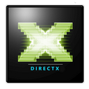

Table of Contents
Supported Hardware Vendors
This page summarizes the various brands of video input and output devices supported by Ventuz. This includes
- GPUs
- Capture and Playback for SDI, VGA, HDMI, DVI, Display Port, Network protocols and consumer devices like Webcams.
- Camera Tracking Systems
- General Purpose IO
SDI
Before getting to the individual Vendors here is an overview of SDI capabilities and formats
About SDI Formats and Standards
The number of SDI formats has grown a lot since the introduction of 4k Formats. Here is summary of common standards.
| Data Rate | SMPTE | Links | Resolution, Maximal Framerate, Description | ||||
|---|---|---|---|---|---|---|---|
| 270 Mb/s | 525i60, 625i50 | ||||||
| ST 259 | SD | full raster | |||||
| 1.5 Gb/s | 1080i60, 1080p30, 720p60 | ||||||
| ST 292-1 | HD | full raster | |||||
| 3.0 Gb/s | 1080p60 | ||||||
| ST 425-1 | 3GA | LevelA : full raster | |||||
| ST 372 | 2xHD | interleaved lines | |||||
| ST 425-1 | 3GB | LevelB : 3G link carries a HD Dual Link stream muxed | |||||
| 6.0 Gb/s | 2160p30 | ||||||
| none | 4xHD | image quadrants | |||||
| ST 425-3 | 2x3GB | 2x 3G Level B-DS links carry 4 HD streams as two samples interleaved | |||||
| ST 2081-10 | 6G | full raster | |||||
| 12.0 Gb/s | 2160p60 | ||||||
| none | 4x3GA | quadrant images | |||||
| ST 425-5 | 4x3GA | 4 3G links as two samples interleaved | |||||
| ST 2081-11 | 2x6G | interleaved pixels across 2 streams | |||||
| ST 2082-10 | 12G | full raster | |||||
| 24.0 Gb/s | 4320p30 | ||||||
| ST 2081-12 | 4x6G | interleaved pixels across 4 streams | |||||
| 48.0 Gb/s | 4320p60 | ||||||
| ST 2082-12 | 4x12G | interleaved pixels across 4 streams | |||||
- In this table and the following table, a framerate of 60 includes 59.94, 50, 48 and 47.96. A framerate of 30 includes 29.98, 25, 24 and 23.98.
- 3G comes in two variants that are incompatible to each other: Level A and Level B. This can lead to compatibility problems, especially with old boards, please check the board compatibility carefully.
- quad link 2160p60 comes in two versions: as image quadrants and as SMPTE ST 425-5 two sample interleaved, and please, you have to check board compatibility carefully.
- quad link 2160p60, in both versions, can be based on 3G Level A or 3G Level B. Ventuz supports only Level A.
| Format | SD | 1080i60 | 1080p60 | 2160p30 | 2160p60 | 4320p30 | 4320p60 | |||||||
|---|---|---|---|---|---|---|---|---|---|---|---|---|---|---|
| Links | SD | HD | 2xHD | 3G A | 3G B | 4xHD | 2x3G B | 6G | 4x3G A | 4x3G A | 2x6G | 12G | 4x6G | 4x12G |
| SMPTE ST | 259 | 292-1 | 372 | 425-1 | 425-1 | none1 | 425-3 | 2081-10 | none1 | 425-52 | 2081-11 | 2082-10 | 2081-124 | 2081-224 |
| Deltacast | ||||||||||||||
| DELTA-12G-ELP-H-2C | X | X | - | X | X | no key3 | no key3 | no key3 | no key3 | no key3 | - | no key3 | - | - |
| DELTA-12G-ELP-H-22/04/40 | X | X | - | X | X | no key3 | no key3 | no key3 | no key3 | no key3 | - | no key3 | - | - |
| DELTA-3G-elp-key-d 4k | X | X | X | X | X | X | X | - | X | X | - | - | - | - |
| DELTA-3G-elp-key-d 2k | X | X | x | X | X | X | X | - | - | - | - | - | - | - |
| DELTA-3G-elp-d 4c/8c | X | X | X | X | X | no key3 | no key3 | - | no key3 | no key3 | - | - | - | - |
| DELTA-3G-elp-2key-d 22/44 | X | X | X | X | X | X | X | - | - | - | - | - | - | - |
| DELTA-3G-* | X | X | - | X | X | - | X | - | - | - | - | - | - | - |
| DELTA-HD-e-key 22/11 | X | X | - | - | - | - | - | - | - | - | - | - | - | - |
| DELTA-HD-ELP-D-44/80 | X | X | X | - | - | X | - | - | - | - | - | - | - | - |
| DELTA-HD-* | X | X | - | - | - | - | - | - | - | - | - | - | - | - |
| FLEX-12G 10 01 | X | X | - | X | X | no key3 | no key3 | no key3 | no key3 | no key3 | - | no key3 | - | - |
| FLEX-3G 40 04 | X | X | X | X | X | - | - | - | no key3 | no key3 | - | - | - | - |
| Black Magic Design | ||||||||||||||
| Decklink 8K Pro | X | X | no key3 | X | X | - | no key3 | X | - | - | - | X | - | - |
| Decklink 4K Extreme 12G | X | X | no key3 | X | X | - | no key3 | X | - | - | no key3 | X | - | - |
| Decklink 4K Extreme | X | X | no key3 | X | X | - | no key3 | X | - | - | out only | - | - | - |
| Decklink HD Extreme 3 | X | X | - | X | X | - | - | - | - | - | - | - | - | - |
| Decklink Duo/Quadro 2 | X | X | - | X | X | - | - | - | - | - | - | - | - | - |
| Decklink Mini Monitor 4K | X | X | - | X | X | - | - | X | - | - | - | - | - | - |
| Decklink Mini Recorder 4K | X | X | - | X | X | - | - | X | - | - | - | - | - | - |
| UltraStudio HD Mini | X | X | - | X | X | - | - | - | - | - | - | - | - | - |
| Aja | ||||||||||||||
| Kona 5 | support on request | |||||||||||||
| Kona 4 | X | X | - | X | X | no key3 | no key3 | - | no key3 | no key3 | - | - | - | - |
| Kona 3 | X | X | - | X | - | - | - | - | - | - | - | - | - | - |
| Kona LHi | X | X | - | X | - | - | - | - | - | - | - | - | - | - |
| Kona LHe+ | X | X | - | - | - | - | - | - | - | - | - | - | - | - |
| Corvid 88 | X | X | - | X | X | X | X | - | X | X | - | - | - | - |
| Io 4K | X | X | - | X | X | no key3 | no key3 | - | no key3 | no key3 | - | - | - | - |
| Io XT | X | X | - | X | - | - | - | - | - | - | - | - | - | - |
| Datapath | ||||||||||||||
| Vision LC SDI | X | X | - | X | X | - | - | - | - | - | - | - | - | - |
| Vision AV SDI | X | X | - | X | X | - | - | - | - | - | - | - | - | - |
| Format | SD | 1080i60 | 1080p60 | 2160p30 | 2160p60 | 4320p30 | 4320p60 | |||||||
| Links | SD | HD | 2xHD | 3G A | 3G B | 4xHD | 2x3G B | 6G | 4x3G A | 4x3G A | 2x6G | 12G | 4x6G | 4x12G |
| SMPTE ST | 259 | 292-1 | 372 | 425-1 | 425-1 | none1 | 425-3 | 2081-10 | none1 | 425-52 | 2081-11 | 2082-10 | 2081-124 | 2081-224 |
- 1 4 links as image quadrants
- 2 4 links in a two sample interleaved pattern
- 3 no key: no key + fill / external keying / internal keying modes
- 4 Ventuz currently doesn't support 8K resolution modes.
Boards are also limited by the number of connectors and capabilies from the table below. For instance, a Delta-3G 11 with one input and one output can not do key+fill because that would require two outputs, and it can not do internal hardware keying because in the table below it says that "DELTA-3G-*" boards can not do internal hardware keying.
SDI Feature Comparison Table
Ventuz allows you to use multiple SDI boards from different vendors at the same time. The amount of simultaneous streams depends on the used boards, the video formats and speed of the main boards PCI-Express slots.
Feature summary and exlenation of sortcuts:
- k+f : output key + fill as separate SDI streams to connect to an external keyer.
- keyer : internal hardware keying modes available.
- duplex : independent input and output streams, multiple input and output streams
- multiformat : when independent streams are supported, can we mix multiple formats? Timebase means multiple formats are supported, but they must be all dropframe or none dropframe.
- bypass : hardware watchdog can bypass SDI signal on catastrophic failure.
- Timecode : timecode reception
- AFD : reception of active format description
- tracking : synchronize tracking network packets with SDI house clock, requirement for all camera tracking system.
- FG/BG/GM : this is intended for output to an external chroma keyer: output foreground as key+fill, background as fill only and garbage matte as key only on 4 output jacks.
- Specials :
- key-input : while doing internal keying, one can use the input signal for 3d rendering
- key-delay : internal hardware keying with delayed input, used for transitions from normal keying to 3d rendering (DVE).
- softkey : keying using an ordinary input and output stream, using the GPU as a keyer.
| Deltacast | |||||||||||||||||
|---|---|---|---|---|---|---|---|---|---|---|---|---|---|---|---|---|---|
| Series / Model | audio | autodetect | k+f | keyer | duplex | multiformat | bypass | Timecode | AFD | Tracking | FG/BG/GM | Specials | |||||
| DELTA-12G-* | yes | yes | - | - | yes | timebase | - | yes | yes | yes | yes | softkey | |||||
| DELTA-3G-elp-key-d 4k | yes | yes | yes | yes | yes | timebase | (yes)6 | yes | yes | yes | yes | softkey, key-input | |||||
| DELTA-3G-elp-key-d 2k | yes | yes | yes | yes | yes | timebase | (yes)6 | yes | yes | yes | - | softkey, key-input | |||||
| DELTA-3G-elp-d 4c/8c | yes | yes | yes | - | yes | timebase | - | yes | yes | yes | yes | softkey | |||||
| DELTA-3G-elp-2key-d 22/445 | yes | yes | yes | yes | yes | timebase | yes | yes | yes | yes | - | softkey, key-input | |||||
| DELTA-3G-* | yes | yes | yes | - | yes | timebase | - | yes | yes | yes | yes | softkey | |||||
| DELTA-hd-e-key 22 | yes | yes | yes | yes | yes | timebase | yes | yes | yes | yes | - | softkey, key-input, key-delay | |||||
| DELTA-hd-e-key 11 | yes | yes | - | yes | yes | timebase | yes | yes | yes | yes | - | softkey, key-input | |||||
| DELTA-HD-* | yes | yes | yes | - | yes | timebase | - | yes | yes | yes | yes | softkey | |||||
| FLEX-12G 10 01 | yes | yes | - | - | - | timebase | - | yes | - | - | - | ||||||
| FLEX-3G 40 04 | yes | yes | - | - | - | timebase | - | yes | - | - | - | ||||||
| DVS | |||||||||||||||||
| Series / Model | audio | autodetect | k+f | keyer | duplex | multiformat | bypass | Timecode | AFD | Tracking | FG/BG/GM | Specials | |||||
| Centaurus II1 | yes | yes | yes | yes2 | yes | full | yes | yes | yes | - | - | softkey | |||||
| Centaurus II LT1 | yes | yes | - | - | yes | full | yes | yes | yes | - | - | softkey | |||||
| Atomix1 | yes | yes | yes | - | yes | full | yes | yes | yes | - | - | softkey | |||||
| Blackmagicdesign | |||||||||||||||||
| Series / Model | audio | autodetect | k+f | keyer | duplex | multiformat | bypass | Timecode | AFD | Tracking | FG/BG/GM | Specials | |||||
| Decklink 8k Pro | yes | yes | yes | yes2 | yes | yes | - | yes | - | yes | yes | ||||||
| Decklink 4k Extreme 12G | yes | yes | yes | yes2 | yes | - | - | yes | - | yes | - | ||||||
| Decklink 4k Extreme | yes | yes | yes | yes2 | yes | - | - | yes | - | yes | - | ||||||
| Decklink Extreme 3D3 | yes | yes | yes | yes2 | - | - | - | yes | - | - | - | ||||||
| Decklink Duo/Quad 2 | yes | yes | yes | yes2 | yes | yes | - | yes | - | yes | yes | ||||||
| Decklink Duo/Quad | yes | yes | - | - | - | - | - | yes | - | yes | - | will appear as multiple devices | |||||
| Decklink Mini Monitor 4k | yes | yes | - | - | yes | - | - | yes | - | - | - | ||||||
| Decklink Mini Recorder 4k | yes | yes | - | - | yes | - | - | yes | - | - | - | ||||||
| UltraStudio HD Mini | yes | yes | yes | yes | yes | - | - | yes | - | - | - | ||||||
| Datapath | |||||||||||||||||
| Series / Model | audio | autodetect | k+f | keyer | duplex | multiformat | bypass | Timecode | AFD | Tracking | FG/BG/GM | Specials | |||||
| VisionLC-SDI | - | - | - | - | - | - | - | - | - | - | - | ||||||
| VisionSC-SDI4 | - | - | - | - | - | - | - | - | - | - | - | ||||||
| VisionSC-HD4+ | - | - | - | - | - | - | - | - | - | - | - | ||||||
| VisionAV-SDI2 | - | - | - | - | - | - | - | - | - | - | - | ||||||
| AJA | |||||||||||||||||
| Series / Model | audio | autodetect | k+f | keyer | duplex | multiformat | bypass | Timecode | AFD | Tracking | FG/BG/GM | Specials | |||||
| Kona 5 4K | yes | yes | yes | yes | yes | - | - | - | - | yes | yes | ||||||
| Kona 5 8K | yes | yes | yes | - | yes | - | - | - | - | yes | yes | ||||||
| Kona 4 | yes | yes | yes | yes | yes | - | - | - | - | yes | yes | ||||||
| Kona 3G | yes | yes | yes | yes | yes | - | - | - | - | yes | - | ||||||
| Kona LHi | yes | yes | - | yes | yes | - | - | - | - | yes | - | ||||||
| Kona LHe+ | yes | yes | yes | yes | yes | - | - | - | - | yes | - | ||||||
| Corvid 88 | yes | yes | yes | yes | yes | - | - | - | - | yes | yes | ||||||
| Io 4K4 | yes | yes | yes | yes | yes | - | - | - | - | yes | yes | ||||||
| Io XT | yes | yes | yes | yes | yes | - | - | - | - | yes | - | ||||||
Limitations:
Some lines in the table describe a whole category of products. If a certain option requires more jacks than the board offers, the mode is obviously not supported. For instance, a blackmagic decklink board with only one output can not support key+fill, while it's larger brother with two outputs will.
Also many features are only available for certain video modes, see the table above to check that.
If a product certain product of a product family breaks the rule, it will be mentioned either in the footnotes (like 8) or as a special line in the table. For instance the Decklink Dual as two outputs but does not support to output key+fill.
- Some features for Atomix / Centaurus boards need special licenses from DVS.
- On Blackmagic and DVS products, the internal keyer can only operate in multiplicative mode. External keying can be multiplicative or additive depending on the hardware used as external keyer.
- Older Blackmagic Boards like HD Extreme 3 and older, are not capable of Input and Output simultaneously.
- On the Aja Io 4k, support for 4k 60Hz depends on the quality of the Thunderbolt interface and the mainboard.
- The 2key boards feature a second genlock, but this is not supported by Ventuz.
- Old versions of the 2k / 4k boards do not support bypass relays. New versions, which only work with Ventuz 6.02.00 or later, feature bypass relays.
Capture and Playback
Deltacast
| Deltacast | HD / 3G Series KEY Series DVI / H4k Series |
The Deltacast HD and 3G SDI boards have been designed for real-time video IO in television broadcast. They provide precisely the feature set required for reliable SDI IO and VANC processing. Neither more, nor less. The Deltacast product range are recommended for use with Ventuz. Please contact Ventuz sales or your Ventuz Broadcast Integrator for details.
Supported Models as of Ventuz 6.02.00
Recommended boards
- DELTA-3G-elp-d 4c (general purpose SDI configurable input/output, 3g key+fill)
- DELTA-3G-elp-key-d 2K (general purpose SDI keyer board)
- DELTA-3G-elp-key-d 4K (4k "2si" key+fill output)
- DELTA-h4k-elp 20 (1080p HDMI/DVI capture)
Other current supported boards
- DELTA-12G-elp-h 2c 20 40 04 22 (12G board)
- DELTA-3G-elp-d 8c, (if you need more outputs / inputs than the 4c board offers)
- DELTA-3G-elp-2key-d 22, DELTA-3G-elp-2key-d 44 (the 2k/4k boards are recommended over these boards)
- DELTA-h4k2-elp 20 (4k HDMI/DVI cature, at the moment no audio)
Supported FLEX modules
- DELTA-gwy 316-8 (gateway board to which the flex modules are connected)
- DELTA-gwy 316-4
- FLEX-DP 10
- FLEX-HDM 10
- FLEX-3G 40 04
- FLEX-12G 10 01
Old Deltacast products still supported:
- DELTA-hd-elp-d 44,80,62
- DELTA-hd-e-key 22,11
- DELTA-3G-elp 01,10,11,20,02,40
- DELTA-3G-elp-d 01,10,11,20,02,21,12,22,40,04
- DELTA-hd-e 22,21,12,20,02,11,10,01
- DELTA-hd-elp 40,20,10
- DELTA-dvi-e 20,10
Unsupported Models
Currently not supported for other reasons:
- FLEX-DP 01 (not tested, should work)
- DELTA-12G1c-hmi10-elp needs deltacast drivers 6.14
- DELTA IP boards (not yet implemented)
- DELTA-3G40-hd40-elp-d (We need to do specialized testing for this card)
- DELTA-12G-elp-h 1c (We need to do specialized testing for this card)
- DELTA-3G-elp 2c (Deltacast stops supporting them since SDK 6.06)
- DELTA-3G-e 22, DELTA-3G-e-key 22 (Deltacast stops supporting them since SDK 5.20)
- DELTA-hd-e 04,40 (Deltacast stops supporting them since SDK 5.15)
- DELTA-SD boards (Deltacast stops supporting them since SDK 5.15)
- DELTA ASI boards (Streaming support not implemented)
Drivers
For Deltacast boards, the Deltacast driver version must match the Ventuz version perfectly. Use the drivers that are installed in the Ventuz directory, usually at "C:\Program Files\Ventuz Technology Group\Ventuz ?" in English windows installations.
Current Versions
| Ventuz 6 | Deltacast Driver Packet | Note |
|---|---|---|
| 6.06.00 | 6.13.1 | |
| 6.04.01 | 6.8.1 patch 3 | patched driver, "v6.08.01_h4k2_EDID_Build3" |
| 6.02.00 | 6.8.1 patch 2 | patched driver, "v6.08.01_h4k2_EDID_Build_2" |
Some versions use a patched version of the driver which is not available from the Deltacast website. Please always use the drivers in the driver folder of the Ventuz installation directory and not the drivers from the deltacast website.
The driver version displayed by the windows device manager should mach the first two numbers, like 6.13, the third number will be different depending on what kind of board is installed.
Older Versions
For older deltacast vesions, the driver version displayed by the windows device manager has nothing to do with the Deltacast driver package version, also the driver version will be completely different depending on the kind of board. Here is a "decoder table":
| Ventuz 4 | Ventuz 5 | Ventuz 6 | Deltacast Driver Packet | HD/Gen1 | 3G/Gen2 | DVI/HDMI | Note |
|---|---|---|---|---|---|---|---|
| 5.09.01 | 6.0 patch | 5.4.150.0 | 6.0.1.0 | 5.3.62.0 | patched driver, "v6.00_Fix4cKill_Build1" | ||
| 4.09.00 | 5.03.00 | 6.00.00 | 6.0 | 5.4.150.0 | 1.0.309.0 | 5.3.62.0 | |
| 4.08.00 | 5.00.00 | 5.19 patch | 5.4.133.0 | 1.0.231.0 | 5.3.47.0 | ||
| 4.06.00 | 5.17 | 5.4.125.0 | 1.0.151.0 | 5.3.42.0 | |||
| 4.05.02 | 5.16 patch | 5.4.124.0 | 1.0.138.0 | 5.3.41.0 | patched driver, "v5.16_Timeout_Ventuz_RC3.1" | ||
| 4.05.00 | 5.16 | 5.4.121.0 | 1.0.138.0 | 5.3.41.0 | |||
| 4.04.00 | 5.15 | 5.4.112.0 | 1.0.125.0 | 5.3.36.0 | |||
| 4.01.00 | 5.14 | 5.4.91.0 | 1.0.71.0 | 5.3.28.0 | |||
| 4.00.00 | 5.13 | 5.4.79.0 | 1.0.44.0 | 5.3.24.0 |
Model Selection
Internal Keying
The DELTA-3G-elp-key 2K board is a full replacement for the good old DELTA-hd-e-Key 22.
If there is trouble with a Deltacast keyer, program the genlock manually to the input port of the background signal or external reference! (Ref). It also helps to set the genlock format manually.
External Keying, or Key + Fill
To do external keying you do not need a keyer board. The 4c and 8c boards will do fine (see product table at the top of this article).
The only board that can do 4k 60Hz SMPTE ST 425-5 (aka 2si) external keying is the DELTA-3G-elp-key 4K.
Configuration
Bidirectional Configurable Boards
Boards ending with a 'c' like DELTA-3G-elp-d 4c or DELTA-12G-elp-d 2c can be switched from all input to all output, and anything in between. For instance, the 4c board can act as 40 31 22 13 or 04 board.
To reconfigure the board, click the board options button on the boards icon. Do this before setting up any stream for this board. Unlike other boards where each jack can be configured individually, with these boards you split the jacks into two groups, inputs and outputs. Check the cabling guide on how this works.
Genlock Offset
It is possible to use a different video format for the genlock signal then for the output that is to be synchronized, as long as the refresh rate is the same. For instance, using PAL as genlock and 720p50 as output is ok. But notice that for deltacast boards, the video format of the output defines the units for the genlock offset: changing the genlock by one line will change the genlock by one line in 720p, not one line in PAL. This also works with genlock format set to auto, since the video format of the output stream is always known. If multiple outputs with different video format are defined, the effect of the genlock offset is unspecified.
DVI / HDMI / DisplayPort Capture Boards
- Before a Deltacast DVI input can be used, the board must be configured for the kind of signal it should expect with the Video Norm Input # board option. This is analog DVI, digital DVI, digital dual link DVI, HDMI or composite. This can be configured for each input separately.
- On the DELTA-dvi-e 20, when receiving a dual link signal it must be connected to the first input, and the second input can not be used any more.
- The DELTA-h4k-elp 20 will use YUV420 color sampling in the 4k @ 60 Hz modes.
- The DELTA-h4k2-elp 20 currently does not support audio.
Memory Pre-Allocation
This only applies to PCIe "gen 1" boards. The info-box you can open with the 'i' button at the board icon will tell you which PCIe generation the board supports. The "gen 2" hardware has this problem fixed and memory pre-allocation is not required.
Sometimes, initializing Deltacast boards will fail with the following error message:
Starting video stream failed. Sometimes this can be fixed by setting Deltacast specific registry keys for 'memory pre-allocation'
This is a problem with Deltacast Gen1 drivers on Windows Vista and later (7, 8.0 8.1 and Windows 10).
This problem arises when the computer is running for some time and can be solved by restarting the Computer. A permanent solution is to set a few Windows registry keys. This can be done by copying the following text into a file named "xxx.reg", and then double-clicking on the file. This will set the registry keys:
Windows Registry Editor Version 5.00 [HKEY_LOCAL_MACHINE\SYSTEM\CurrentControlSet\services\DELTA-hd] "PreallocPool0Size"=dword:03000000 "PreallocPool1Size"=dword:03000000 "PreallocPool2Size"=dword:03000000 "PreallocPool3Size"=dword:03000000 "PreallocPool4Size"=dword:00000000 "PreallocPool5Size"=dword:00000000 "PreallocPool6Size"=dword:00000000 "PreallocPool7Size"=dword:00000000 [HKEY_LOCAL_MACHINE\SYSTEM\CurrentControlSet\services\DELTA-dvi] "PreallocPool0Size"=dword:03000000 "PreallocPool1Size"=dword:03000000
[http://ventuz.com/sites/default/files/downloads/files/drivers/deltacast_mem_pre_alloc.zip download] this registry file from www.ventuz.com
The problem arises when the Deltacast driver can not allocate enough continuous memory for the video buffers. Using this registry file will reserve 288 MBytes of memory at boot time, making it unavailable for other purposes. You might want to tweak this a bit to save memory:
Each pool is associated to an input or output of the HD/DVI board. The hexadecimal number "03000000" equals to 48 MByte, which should be more than enough for a reasonable amount of HD buffers.
The number of pools to pre-allocate is the number of SDI inputs plus number of SDI outputs. Blackburst reference inputs (genlock) do not count. Example: a 2 in 2 out board needs pools 0 to 3 pre-allocated, a 2-in card needs pools 0 and 1 pre-allocated.
The way these "preallocation pools" are mapped to the individual input and outputs is rather complicated, so it's best to pre-allocate for all available inputs and outputs even if some of them are not used.
The file above will work for a hd-e-key 22 and a dvi-e 20 board. For a hd-elp-d 44 or 80, also set the pools 4 to 7 to 03000000.
AJA
| AJA | Kona / Corvid |
Our implementation for AJA boards has currently the following limitations:
- Although multiple inputs and outputs can be used, they must all have the exact same video format.
- Because of this, auto-detecting inputs only works for a single input stream.
- AFD and Timecodes are not yet supported
- The HDMI features are not supported.
Supported Models
The following AJA SDI Boards are officially supported:
- Corvid 88
- Kona 4 Quad
- Kona 3G Quad
- Kona LHe +
- Kona LHi
- IO 4K
- IO XT
The small boards LHe+ and LHi only support audio for one stream.
The following board configurations are supported on request:
- Kona 5 4k1
- Kona 5 8k1
This means that the board generally works with standard Venutz, but there are complicated limiations, please check with us.
Unsupported Models
As the AJA SDK needs some special programming for each board, all other boards are not supported.
Drivers
Use the drivers that are installed in the Ventuz directory, usually at "C:\Program Files\Ventuz Technology Group\Ventuz ?" in English windows installations.
| Ventuz 4 | Ventuz 5 | Ventuz 6 | Driver |
|---|---|---|---|
| 6.06.00 | 15.5.1.2 | ||
| 4.05.00 | 5.00.00 | 6.00.00 | 12.0.0.123 |
You can download the driver from the Ventuz support website at http://www.ventuz.com/drivers.
AJA and Firmware Updates
The Kona 3G (and some other modern AJA boards) can operate in two modes: in Normal mode they have 2 inputs and 2 outputs, can operate 2 streams simultaneously and features an up/down converter. In Quad mode the up/down converter is not available, but the 4 connectors can be switched freely between input and output, allowing for a 4:0 or 0:4 configuration, or everything in between, and 4 streams can be operated simultaneously.
This is possible because the central chip in all SDI boards is an FPGA. This chip contains thousands to millions of hardware logic cells that can be re-wired by uploading a bit-file to form whatever hardware is desired. When programming an FPGA, it is not only a software that is changed, but the hardware itself. Sometimes vendors do not manage to fit all features into the limited logic cells and supply different bit-files for different feature sets.
As Ventuz can not use the up/down converter but greatly benefits from individually switching inputs and outputs, it is strongly recommended to flash the Kona 3G into "Quad" configuration.
Problems Installing Drivers
If you have problems installing the driver package, uninstall it completely using the control panel, programs & features. Then install it again. This should make the driver installer re-scan all hardware and install the drivers correctly, as you can verify with the device manager.
Black Magic Design
| Black Magic Designs | Decklink series Intensity series UltraStudio series |
We support three product families from Blackmagic design:
- Decklink boards provide SDI, DVI and sometimes anaolog inputs and outputs. The more advanced boards provide keyer functionality and can output key+fill.
- UltraStudio products are similar to Decklink, but are connected via Thunderbolt or USB3 instead of PCIe.
- Intensity is the label Blackmagic puts to products that only support DVI / HDMI / DisplayPort and analog connection. There is no SDI. They can come internally as PCIe or externally via USB / Thunderbolt.
Supported Models
Current models that we tested:
- Decklink 8K Pro
- Deckink 4k Extreme 12G
- Deckink 4k Extreme
- Decklink Duo II
- Decklink Quad II
- Decklink Mini Monitor 4k
- Decklink Mini Recorder 4k
Legacy models that we tested:
- Decklink Extreme 3
- Decklink Duo
Other models should work as long as they are supported by the 11.x drivers.
Drivers
Blackmagic drivers don't need to match perfectly, using a driver that is outdated or using a new driver with an old Ventuz version is usually OK, as long as the major version matches (9.x, 10.x, 11.x).
| Ventuz 4 | Ventuz 5 | Ventuz 6 | Desktop Video Driver | Comment |
|---|---|---|---|---|
| 6.06.00 | 11.4.1 | Major version bump, 11.x driver required | ||
| 5.03.00 | 6.00.00 | 10.8.4 | fixes for Windows 10 anniversary update | |
| 4.04.00 | 5.00.00 | 10.3.1 | Major version bump, 10.x driver required | |
| 4.00.00 | 9.7.7 |
We recommend to always use the latest Blackmagic driver, the table above shows which driver version we used for testing.
Model Selection
Multi-Stream:
BlackMagic frequently updates their product lineup.
Most BMD boards only support one input and one output stream, and before the "4k" series not even at the same time. Even if a board has 2 or 4 jacks you can have only one input and one output stream at a time, the additional jacks are for key+fill output or for multi-link streams like HD-dual link or SMPTE 425-3 3G-LevelB dual link.
The exception are the Decklink Duo / Decklink Quad boards. The first generation of these boards support two or four independent channels. Still they can not be used to create key+fill because each channel is independent and can not be used in a dual link mode. Also, you can not have input and output of a channel operate at the same time.
The second generation Decklink Duo 2 / Decklink Quad 2 are versatile boards. The duo has four and the quad has eight jacks that can be individually used as input or output. Each pair of jacks can be used for internal and external keying. Still, you can not bundle 4 strams as quad link 4k.
Keying and video format:
Not all boards support internal and external keying for all video formats. See the big vendor table above for details.
Configuration
When getting video from HDMI / DVI inputs, you must specify if the input is in RGB 4:4:4: or YUV 4:2:2. This is done with the board options. When using autodetect, this will be done automatically.
Datapath
| Datapath | VisionRGB VisionAV VisionSC |
Currently we do not support audio with Datapath boards.
The VisionAV-SDI can capture a single channel SDI signal.
Supported Models
We explicitly tested the following bords
- VisionLC-HD2
- VisionLC-SDI
- VisionSC-DP2
- VisionSC-HD4+
- VisionAV-SDI
- VisionAV-HD
- VisionRGB-E1
Other bords from the VisionRGB / VisionAV / VisionSC series should also work.
Unsupported Models
We only support datapath capture boards, no graphics boards.
Drivers
| Ventuz 4 | Ventuz 5 | Ventuz 6 | Driver SC / AV / RGB | Driver LC |
|---|---|---|---|---|
| 6.06.00 | 7.20.35001.1 | 1.2.4.35006 | ||
| 4.05.00 | 5.00.00 | 6.00.00 | 7.11.0.1028 |
The use of other drivers is possible, but these are the driver we used to test the boards.
DVS
| DVS | Centaurus II (LT) Atomix series |
Supported Models
Centaurus II, Centaurus II LT:
- Both Centaurus II and Centaurus II LT are supported
- Internal hardware keying is supported (not LT)
- The internal keyer can only operate in multiplicative mode
- RS422 and GPI is not supported
- On some rare mainboards, the internal hardware keying of Centaurus II is faulty. This can be fixed by setting Board Format to RGBA 8 in the Advanced Options. This setting has the same speed but lower quality as Quality , so it should only be used to fix mainboard incompatibility issues. See Board Format for more information about board formats and how Quality and Speed are interpreted.
- The Firmware version for an Centaurus II should be 3.2.76.7_19_15
Atomix Series
- Internal hardware keying is not supported.
- RS422 and GPI is not supported
- When using any SDI-3G formats, only one input and one output is available.
- When you put an input in auto-detect mode and want to receive 3G or dual link signals, you need to manually set the board option "Multi Channel" to off. This will be done automatically if you specify one of these modes directly, but it won't happen if you use auto-detect.
- The Firmware version for an Atomix LT should be 5.4.0.19_5.2.7
Both supported boards use up to 8 PCI-Express lanes. When inserted into a 4 lane PCI-Express slot, data transfer between Ventuz and the board works only at half speed. Please check for correct installation of the card by checking the Video Device Information.
Drivers
Use the drivers that are installed in the Ventuz directory, usually at "C:\Program Files\Ventuz Technology Group\Ventuz ?" in English windows installations.
| Ventuz 4 | Ventuz 5 | Ventuz 6 | Driver |
|---|---|---|---|
| 4.00.00 | 5.00.00 | 6.00.00 | 4.3.5.10 |
NewTek
| NewTek | iVGA/AirSend NDI (Network Device Interface) |
NewTek has developed network protocols to connect with their Tricaster products without the need for special hardware.
iVGA / AirSend
iVGA is a network protocol that can be used to send video streams from Ventuz to a Tricaster. The two configured outputs are reachable under the following address:
1. http://127.0.0.1:49480/AirSend.mpg 2. http://127.0.0.1:49481/AirSend.mpg
NDI
NDI, or Network Device Interface, is a technology developed by Newtek that allows creating or receiving video streams over a standard computer network. You can use NDI Streams as an INPUT or create an OUTPUT and broadcast the output via NDI. Please refer to the how to use NDI documentation.
Windows Media Foundation
| Windows Media Foundation |
Webcams and other devices often ship with Windows Media Foundation drivers. This is currently only supported for inputs. Some older devices come with Video for Windows or DirectShow driver. Windows Media Foundation wraps these drivers into a WMF filter.
GPUs
Ventuz 6 requires a Direct3D 11 compatible GPU.
Ventuz 5 requires a Direct3D 9c compatible GPU with full support for shader model 3.
AMD
| AMD | Radeon Pro Series (recommended) FirePro Series (recommended) Radeon Series (with limitations) |
Ventuz supports the ATI FirePro™ S400 Synchronization Module to synchronize multiple GPU's in a cluster of Ventuz installations.
Nvidia
| Nvidia | Quadro Series (recommended) Geforce Series (with limitations) |
Ventuz supports the Quadro Sync and Quadro G-Sync boards to synchronize multiple GPU's in a cluster of Ventuz installations
The NVIDIA Quadro Digital Video Pipeline is not supported by Ventuz. The SDI output of these board family can be used as monitor output. External key, Audio and other features of this product line are not address by Ventuz.
Intel
| Intel | Intel integrated graphics |
While Intels integrated graphics solutions are becoming better and better, they generally can not compare to the capabilities of the GPU's from AMD and Nvidia. Intel GPUs are not recommended for production. Often, however, they are the only choice for tablet- or laptop-based productions. In these cases, be sure to verify your performance and build Ventuz scenes carefully.
Other
|  | Direct3D | Windows 7 compatible graphics board |
If there are any other vendors left Ventuz can't state any technical information about them. Ventuz may run on such boards without any promises!
Camera Tracking Systems
Ventuz currently supports camera tracking data input from various camera tracking systems vendors - see below.
Camera Tracking is only supported for SDI input and output and certain models. Check the SDI-Vendor list above to see which SDI board models are supported.
Trackmen - Egripment
| Trackmen Egripment | VioTrack TorqTrack ManuTrack |
German vendor Trackmen develops various camera tracking systems using various technologies. Trackmen uses in all cases the same consistent protocol for tracking data transfer, so all Trackmen systems can be connected to Ventuz, regardless of the tracking technology used. Currently Trackmen collaborates with crane manufacturer Egripment to offer sensorized cranes and pedestals - since these systems use Trackmen technology, they are also supported by Ventuz.
NCam
| NCam | NCam |
British manufacturer NCam develops Optical Camera tracking solutions that use a lightweight sensor bar attached to the camera to track natural features in the environment, allowing the camera to move freely in all locations - that makes this system especially well suited for shoulder-held or steady-cam shots, or for augmented reality projects outside of the studio.
Stype
 | Stype Kit | Stype Kit |
Croatian manufacturer Stype offers a sensorizing kit with auto-aim functionality, called Stype Kit, for existing cranes and jibs. The system does not require any additional external sensors or infra-red cameras and there is no need for any physical modifications of the camera crane.
Mo-Sys
| Mo-Sys StarTracker | StarTracker |
British manufacturer Mo-Sys is a traditional vendor of solutions for remote heads & motion control, broadcast robotics, mechanical and optical camera tracking for AR and VR, and on-set visualization. One of the latest additions to their portfolio is an optical camera tracking system called StarTracker, which features a small sensor camera tracking a cloud of markers placed on the ceiling - that makes it mostly usable for permanent in-studio setups
Head Mounted Displays
We introduced built-in support for Head Mounted Displays (HMD) such as HTC-Vive and Oculus Rift. See the related How To for more detailed information.
HTC Vive
| HTC Vive integrated through Open VR |
Oculus Rift
| Oculus Rift integrated through Open VR |
Other
GPI Boards
At the time of writing Ventuz supports the DLP Design IO8 and the Numato 16 Channel USB GPIO boards.